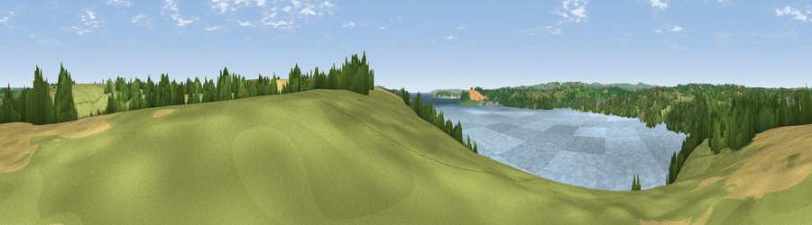

Viewpoint near Feock
#20630 in England · top 42% of its area beats it · near FeockThe view, rendered

A 360° render of this exact spot computed from the terrain model, tree cover and land cover — summer colours, afternoon light, calibrated against photographs of famous viewpoints. Real trees, hedges and buildings will differ in detail.
The panorama
Grey silhouette: terrain skyline in each direction (720 bearings, Earth curvature and refraction included). Dashed green: skyline with trees (+15 m) and buildings (+8 m) as obstacles. Blue strip: how far the ground is visible on each bearing.
Where the view opens
Wedge length = distance to the farthest visible ground on that bearing (vegetation-aware). Rings at 10, 25 and 50 km.
What fills the view
37% water · 36% grassland · 16% woodland · 11% cropland ·
Angular shares of the visible panorama (visual magnitude), not map area. Landscape diversity 0.57 (0–1 Shannon).
Key numbers
More beautiful places nearby
The staircase of upgrades: each row has a higher view potential than everything closer. Driving times are estimates from straight-line distance, calibrated against real road routing — check an actual route before setting out.
| Place | Direction | Drive | Score |
|---|---|---|---|
| Viewpoint near Halwartha | SSE · 3 km | ~7 min | 56.3 |
| Viewpoint near Mylor Churchtown | SSW · 4 km | ~9 min | 60.6 |
| Curgurrell Hill | E · 5 km | ~10 min | 71.5 |
| Drake's Downs | S · 7 km | ~14 min | 71.9 |
| Viewpoint near Lanner | WNW · 13 km | ~23 min | 74.5 |
| Carn Brea | W · 16 km | ~28 min | 81.1 |
| St Agnes Beacon | NW · 18 km | ~31 min | 86.1 |
| Viewpoint near Foxhole | NE · 21 km | ~36 min | 86.4 |
50.20005, -5.02768 · source: screening · position refined by local search. Computed location — check access rights before visiting.